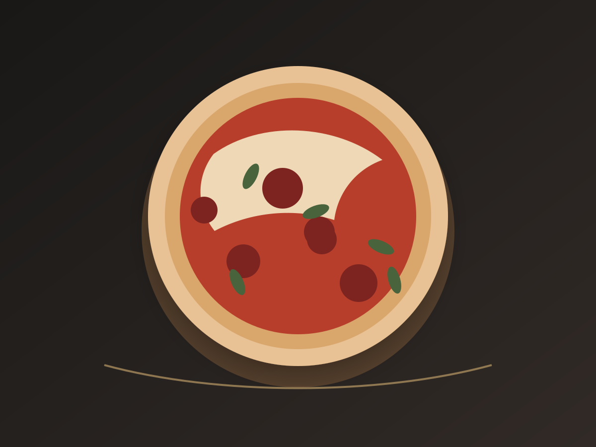

El Errante en Casa
Hechas aquí. Terminadas en casa.
Masa propia, recetas completas y productos diseñados para recuperar estructura, queso y aroma al volver al horno.
La colección
Cinco perfiles. Una masa.
Desde la sencillez de una Margherita hasta el contraste dulce, ácido y ahumado de La Errante.
Diseñadas para volver al fuego
No es recalentar. Es terminar la cocción.
Cada pizza sale del taller preparada para que el horno doméstico recupere base, borde, queso y aroma sin exigir una cocina profesional.
Directo desde congeladaHorno domésticoAcabado finalReposo breve

Preparación general
Mira primero la pizza. Después, el reloj.
Precalienta completamente el horno y la superficie.
Retira el empaque y cocina directamente desde congelada.
Espera hasta recuperar base firme, borde y queso fundido.
Agrega el acabado, deja reposar y corta.

Encuentra tu pizza
Una ruta corta entre el congelador y la mesa.
Consulta sabores, ingredientes, alérgenos, instrucciones y cobertura antes de elegir.